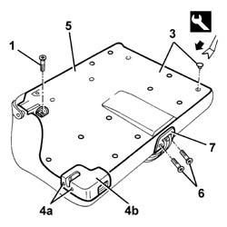
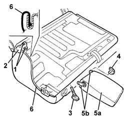
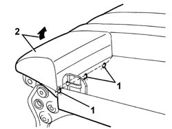
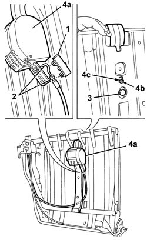
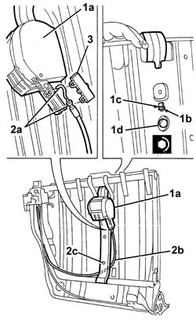
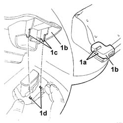

7065B18 CENTRE REAR SEAT BELT - R.R.
- Path
- Procedures > 70 FITTINGS > 7065 SEAT BELTS AND ACCESSORIES > 7065B rear safety belts > 7065B18 CENTRE REAR SEAT BELT - R.R.
- Kind
- repair procedure (removal / refitting; the operation number is the code)
- Applies to
- all engines; all production periods
- Interactive page
- https://sloeber94.github.io/elrnDB-a147/en/#/3025929
Applies to: all engines; all production periods
 Removing
Removing
 Refitting
Refitting7040B10 load platform (luggage platform) trim - r+r
7050A18 rear seat squab - r+r (right side).
7050B10 l/h or r/h head restraint (one) of rear seat - r+r
7050B30 rear seat central armest r r (right side).
1. Undo the bolt fixing the mounting ring.
2. Remove the mounting ring.
3. Release the retaining buttons using the special tool.
 | Name | Country |
|---|---|---|
3 | Scraper blade | 1.823.015.000 |
4. Undo the bolts (4a) and remove the protection (4b), then do up bolts (4a).
5. Remove the squab protection.
6. Unscrew the bolts
7. Remove the belt slide by releasing the inner retainer using the special tool.
| Name | Country |
|---|---|---|
7 | Scraper blade | 1.823.015.000 |

Applies to: all engines; all production periods
1. Unscrew the bolts
2. Remove the seat anchor bracket.
3. Remove the head restraint tubes.
4. Remove the armrest embellishment.
5. Remove the armrest (5a), disengaging it from the retainers (5b).
6. Remove the cover along the entire perimeter of the seat.

Applies to: all engines; all production periods
1. Using cutters, cut the hooks securing the trim to the frame.
2. Remove the cover from the padding.

Applies to: all engines; all production periods
1. Fold down the squab frame and take off the cover.
2. Disconnect the belt release control cable from the retainers.
3. Unscrew the reel retaining bolt.
4. Remove the reel with seat belt (4a) after disconnecting retainer (4b) from the seat on frame (4c).

Applies to: all engines; all production periods
Refitting
RemovingCheck that the winder and seat belt are not damaged.
1. Fit the reel with seat belt (1a) in its seat and engage retainer (1b) with the seat on frame (1c). Then secure with bolt (1d).
 | Fastening | Component | Ø | Value (daNm) |
|---|---|---|---|---|
1 | Bolt | CENTRE REAR SEAT BELT REEL. | 7/16" | 4.0 |
2. Connect the belt release control cable retainers (2a).
3. Fit the cover.

Applies to: all engines; all production periods
Fit the trim with padding and clench the hooks securing the trim to the frame.
Fit the cover along the whole perimeter.
Fit the armrest on the retainers.
Fit the armrest panel.
Fit the head restraint tubes.
Fit the seat anchorage bracket and fix it with the bolts.
Fit the belt slide and engage the inner retainer. Then secure with bolts.
Position the squab protection and fix it with the retaining buttons.
1. Undo the side bolts (1a) of the lock, position the protection (1b) then retighten the bolts.
Make sure that the retainers (1c) of the protection (1b) fit correctly in their seatings (1d) in the engagement assembly.

Applies to: all engines; all production periods
Position the mounting ring and fix it using the bolt.
7050B30 rear seat central armest r r (right side).
7050B10 l/h or r/h head restraint (one) of rear seat - r+r
7050A18 rear seat squab - r+r (right side).